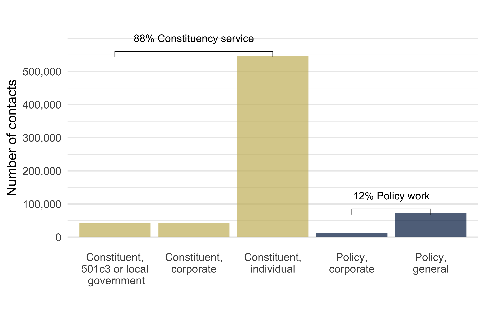
4 Studying What Congressional Offices Do Behind the Scenes
ABSTRACT: Interbranch representation has been largely invisible to voters, journalists, and scholars. This has consequences for democratic accountability. We describe how we collected and processed the data that we use to study interbranch representation before providing a quantitative overview of the content of and variation in our five types of interbranch representation. We obtained our data through a large number of Freedom of Information Act (FOIA) requests over a 10-year period, which has produced a near-census of congressional contacts with federal agencies. The vast majority of these communications involve constituency service on behalf of individuals, with a smaller amount dealing with corporate and nonprofit/local government constituency service. The remainder involves policy work, which we classify as either general policy work or policy work on behalf of industries. Across legislators, we document extraordinary variation in all five types of interbranch representation: some do very large amounts, while others do almost none. And although many legislators who are high performers of one type are also high performers of other types, this is not always the case. In various ways, these descriptive findings speak to our theoretical expectations about the roles of demand, capacity, and strategy in legislators’ interbranch representation work.
To understand interbranch representation, we embarked on a nearly decade-long data collection effort. We did not realize how challenging and time-consuming this would be. But we believed that collecting data on congressional offices’ contacts with all parts of the federal government, not just a few agencies, was necessary to answer our big-picture questions. In this chapter, we describe the extensive process in which we collected, cleaned, coded, and analyzed records from over 100 different federal agency congressional correspondence tracking systems covering 179 agencies and subagencies, a near-census of recorded congressional contact with the executive branch.1
In 2017, we began filing FOIA requests with all federal agencies and sub-agencies for records of their correspondence with members of Congress. We continued filing requests through June 2026. This effort to collect a near census of legislator-agency interactions has yielded by far the largest and most comprehensive dataset of its kind. We requested records from 295 federal agencies and received records from 179 agencies via 100 different FOIA offices (some offices process records for multiple agencies or subagencies). Thousands of pages of agency logs yielded 962,720 instances of what agencies tagged as congressional correspondence, 837,223 of which we link to a legislator in office at the time.2 After dropping agency-years with incomplete records, we have 829,904 observations that we use to make agency-legislator-year counts per year. These data allow us to assess potential causes of variation in interbranch representation overall and representation of different constituencies.
In Chapter 2, we argued that legislators’ offices, with limited staff and time, must decide how to allocate their resources across forms of interbranch work, and that these allocations reflect each office’s capacity, the demands it faces from constituents and organized interests, and the strategic choices legislators make in response to the incentive structure of their political environment. Chapter 3 showed qualitatively what casework and policy work looks like on behalf of individuals, businesses, nonprofits, and local governments. In this chapter, we begin to explore interbranch representation with quantitative data: how much of each type of interbranch representation legislators provide, and how much it varies across offices.
4.1 New Data
When members of Congress contact the bureaucracy, most federal agencies enter these contacts into a database or keep some other kind of record of the correspondence.3 Recording congressional correspondence allows agency staff to route the request to the correct people inside the agency and respond within a timeframe often specified in agency protocols for interacting with members of Congress. These congressional correspondence logs thus allow us to observe the overall volume of interbranch representation for each member of Congress, and the general purpose of each contact. We did not, in most cases, obtain the full text of the communications themselves. However, the summaries of letters, emails, and calls (written by agency officials for their colleagues and superiors) generally provided rich information on the nature of the request.4
In Chapter 2, we established that interbranch representation occurs behind the scenes, out of view of the public, journalists, and scholars. More specifically, these records of communications between members of Congress and federal agencies are, for the most part, not proactively disclosed to the public. We therefore obtained our data through a large number of Freedom of Information Act (FOIA) requests for federal agencies’ congressional correspondence logs.5
As we describe below, obtaining records of legislators’ communications with federal agencies through FOIA requests is difficult and slow. Understandably, therefore, prior studies have focused on records from a small number of agencies. Those studies have yielded important findings regarding distributive politics (Mills and Kalaf-Hughes 2015), the policy strategies of cross-pressured legislators (Ritchie 2018, 2023), the role of ideology in congressional oversight (Lowande 2019), descriptive representation (Lowande et al. 2019), and money in politics (Powell et al. 2023). With a near census of agencies, we are able to study patterns across all members and policy areas, as we began to do in related work drawing on the same data collection effort (Judge-Lord et al. 2026).
We are contributing to that growing field of scholarship with a painstakingly collected new dataset that represents a near census of legislator contacts with federal agencies (179 of 295 agencies) from 2007 to 2025. Assembling it required 434 FOIA requests (some agencies required multiple requests), over a thousand followup and clarification emails, and dozens of hours on the phone with FOIA officers. These data—an order of magnitude larger than those in all prior studies combined—enable us to address a range of new questions about representation that previous studies, which focused on a small number of agencies, could not.
Data collection process
We set out to collect data on congressional correspondence with all federal agencies between 2007 and the date of each request (2017 through early 2025). We were able to obtain earlier records from some agencies. Thus, our analyses have the best coverage from 2007-2017, with some agencies also covered between 2000 and 2006 and some agencies also covered 2018-2025 if they processed our request much later or responded to a followup request.^[Very few agencies provided records before 2000, and we exclude pre-2000 records from our analysis.
Some of the descriptive figures in this chapter show sparse data of a certain types before 2007 or after 2017 or shifts across years that are clearly due to data availability. All of our analyses in subsequent chapters use agency-year fixed effects that account for incomplete data coverage for most agencies. See Appendix B for more details.]
Each federal agency and many sub-agencies have a FOIA office. Separate from the FOIA office, each agency keeps track of congressional correspondence. Small agencies and regional offices had staff search their email history or provided handwritten records, which we then transcribed. Department Secretary offices generally queried a correspondence tracking database designed to track all correspondence. Some subagencies share correspondence tracking systems within a department; other subagencies maintain separate systems; still others tracked correspondence in multiple ways or changed methods during the period we study. These differences were opaque but became apparent to us as we filed requests and received records across agencies.
From the beginning, we suspected that congressional offices communicated directly with many sub-agencies, not just Offices of Legislative Affairs or Offices of the Secretary. This intuition was validated as we received distinct records from sub-agency components, even after the central office had told us that it maintained all records of congressional correspondence for their agency. Other central offices were clearer about the decentralized nature of interbranch representation. As one FOIA officer put it, “OSD-JS [Office of the Secretary of Defense Joint Staff] Legislative Affairs is supposed to be the front door for DOD, but if somebody knows somebody, well…”
Our first FOIA requests in 2016 asked about the kinds of records agencies kept. This informed our initial round of FOIA requests for correspondence logs with 27 sub-agencies within the U.S. Department of Agriculture (USDA) in February 2017.6 By May, we had received records from 20 of the USDA sub-agencies. Many other agencies, including the Environmental Protection Agency (EPA), the Department of Commerce, the Department of Education, the Indian Health Service (IHS) and Substance Abuse and Mental Health Services Administration (SAMHSA) within the Department of Health and Human Services, and several components of the Department of Transportation like the Federal Aviation Administration (FAA) and Federal Highway Administration (FHWA), also provided records in a matter of weeks or months.
However, the process for many other agencies was far less straightforward. We waited for nearly a year for records from the Department of Veterans Affairs. Other agencies, including the Internal Revenue Service (IRS) in the Treasury Department, the Office of Congressional and Intergovernmental Affairs (OCIA) in the Department of Labor, and the Bureau of Indian Affairs and the Office of the Solicitor within the Department of the Interior, took a year or more. Still other agencies, including the Centers for Disease Control and Prevention (CDC) in the Department of Health and Human Services, asked that we accept a rolling release of the records (usually a year or two at a time). The U.S. Citizenship and Immigration Services (USCIS) in the Department of Homeland Security has an extraordinary volume of congressional correspondence and initially agreed to give us congressional correspondence logs from one year, 2018. We received these logs a year and a half after filing the request. Immediately upon receiving the 2018 data in August 2020, we filed a second request for congressional correspondence logs from 2016, which we received four and a half years later, in April 2025.7
The State Department, we have discovered, is notorious for its backlog of FOIA requests. We filed our initial request for all State Department congressional correspondence logs on May 18, 2018. As of November 2026, we still had not received the records. We have been in frequent communication with State Department FOIA officials for eight years to check on the status of our request. Most recently, they estimated that our request would be complete on May 29, 2026. A recent followup email for a new estimated completion date in June of 2026 has not yet been answered. State is the only department for which we do not have records.
After receiving initial batches of documents (primarily covering 2007–2017) for a number of agencies, we filed second requests with these agencies for their congressional correspondence logs for 2018 and 2019. Response times also varied for this second batch of requests. However, they were shorter on average because most of these requests were directed to agencies that had already been responsive.^
Template language used in each of our FOIA requests can be found in Section A.2. Table A.1 in Appendix A reports, for each department, the number of components to which we sent FOIA requests, the number that provided records, and the number of observations we received. Section A.3 describes how we converted documents we received into a dataset. Figure A.1 shows the coverage of agencies used in the data, including the relative density of the data per agency by month.
Coding the Data
The most labor-intensive part of the project was coding each record to identify the purpose of the communication. We hand-coded over half a million legislator requests for federal agencies. The work spanned nine years and involved 10 research assistants, who worked from a detailed codebook (described below) under our supervision. We relied primarily on hand-coding rather than automated classification for two reasons: (1) automated methods were less developed when we started this classification process, and (2) the summaries agencies recorded were often brief, inconsistent across agencies, or ambiguous without context. For example, a contact might be labeled only as a followup to an earlier request, so its subject could be identified only by locating the original record.
As we discussed in Chapter 3, interbranch representation takes two main forms: constituency service and policy work. For each, we also coded on whose behalf the work was done. We divided constituency service work into work on behalf of (1) individuals, which we call individual constituency service; (2) businesses, which we call corporate constituency service; and (3) nonprofits and local governments, which we call nonprofit and local government service. We divided policy work into (4) corporate policy work, which concerns a business, class of businesses, or an industry, and (5) general policy work, which does not. We also included a sixth category for “other” correspondence, which consisted mostly of thank-you notes, congratulations, and other personal letters; these were rare. Where agencies did not provide the original letters or emails from members of Congress, we used the information contained in the summaries of the correspondence, usually found in a “Subject” field from a correspondence tracking system, to code each contact. The level of detail included in these summaries varied widely across agencies. For some agencies with sparser subjects, it was possible to auto-code for our types by identifying keywords or phrases that were repeated throughout the logs for a particular agency. We did this only when we were sure that every instance of that key phrase was unambiguously a certain type. Some agencies tagged individual constituency service requests as “casework” or “constituent,” which was useful for our purposes. As noted above, most data required hand-coding to consider detailed and/or ambiguous subjects more carefully.
To facilitate hand-coding by a number of different research assistants over time (and to standardize and record our coding process), we created a detailed codebook that spells out the differences between our types. We defined personal/individual constituency service as “individual, non-corporate constituent service”; examples included “help with a government form…visa, back pay, military honor…disability application, workers’ compensation, personal complaint,” and other similar cases that were clearly on behalf of an individual with no business interests involved. We considered corporate service to be “anything related to a specific individual case by a business (including business owners like farmers and consultants).” Examples included helping businesses with grants, loans, contracts, or fines. Service on behalf of government and nonprofit entities (type 3) was similar, except this work was done on behalf of “municipal or state governments (including cities, counties, etc.) or non-business-oriented nonprofit organizations.” It also included assistance with (or support for) grant applications. In many cases, agencies’ congressional correspondence logs named the specific government or nonprofit entity; for some organizations, it was necessary to conduct a web search to confirm their nonprofit status.
Our two remaining types of interbranch representation focused on policy work. Corporate policy involved “anything applying to a class of commercial activity or businesses (e.g., shipping, airlines, agriculture),” including “legislation, bills, acts, appropriations, authorizations, etc.” Some summaries of correspondence mentioned specific industries, which meant that these contacts were often fairly straightforward to code. Finally, we defined general policy work as policy work that was non-corporate in nature. General policy communications included legislators’ requests for policy-relevant information; requests from legislators or committees related to hearing testimonies or reports; and requests for clarification on agency rules or lobbying regarding proposed agency rules.8
Figure 4.1 and Table 4.1 show the results of our coding. The vast majority of observations—over 540,000—were coded as constituency service on behalf of individuals.9 Together, three types of constituency service make up 88% of coded observations. We observed nearly equal amounts of corporate service and nonprofit/local government service (about 42,000 each). Our overall breakdown of these three types of constituency service is similar to that observed by Johannes (1984) decades earlier. In surveying 37 Senate offices, Johannes found that 73.2% of all cases they received came from individuals; 11.2% came from state and local governments; and the rest came from businesses, private organizations, and other groups. Among the 144 House offices that Johannes surveyed, 80% of their incoming cases came from individuals, while 8.9% came from state and local governments, and the remainder came from businesses and other organizations. The remaining 12% of our observations were coded as policy work, most of which (over 72,000 observations) was general policy work. Corporate policy work was the smallest category, with over 13,000 observations.
| Type of Interbranch Representation | N | % of Coded |
|---|---|---|
| Constituency service | 631,211 | 88.0 |
| Individual service | 547,202 | 76.3 |
| Corporate service | 42,092 | 5.9 |
| Nonprofit and local government service | 41,917 | 5.8 |
| Policy work | 86,187 | 12.0 |
| General policy | 72,570 | 10.1 |
| Corporate policy | 13,617 | 1.9 |
| Total coded | 717,398 | 100.0 |
| Uncoded | 115,566 | |
| Total | 832,964 |
Several agencies did not provide enough information describing the nature of the contact to apply our coding scheme. We left those cases uncoded. As Table 4.1 shows, we were unable to categorize approximately 14% of cases. We retained these cases in our counts of overall legislator interbranch representation, but the 13 agencies that provided insufficient records are necessarily excluded from our analyses of types of interbranch representation.
4.2 Patterns of Interbranch Representation
The sections that follow examine our five types of interbranch representation (individual constituency service, corporate service, nonprofit and local government service, general policy work, and corporate policy work), followed by a section examining the correlation across these types of interbranch representation. Whereas Chapter 3 used cases to illustrate what each type of interbranch representation involves, here we use our data to examine two features of each type: which terms appear most often in the subjects describing the correspondence and how widely offices differ in the volume of this work. Because we show the most frequent terms separately for each year, we can also see how the subjects of interbranch representation shift as new issues, such as the Affordable Care Act, the Ebola and Zika outbreaks, and the COVID-19 pandemic, emerge. We present these data as word clouds and interpret the findings as reflecting both the subjects legislators raised and how agencies recorded them, because most of our records are summaries written by agency staff rather than the text of the legislators’ letters. These interpretations help provide insight into the repeated topics within each type of interbranch representation and how those subjects change over time.
In two of the sections that follow, we dive in more deeply. For individual constituency service, we compare our data with major events that outside observers have identified as drivers of casework. For general policy work, we break the category into sub-types, distinguishing work related to legislation, traditional oversight, and agency policymaking.
To briefly preview what we are about to describe, we see two consistent patterns. First, variation within each type is enormous, with some offices doing almost none of that form of interbranch representation and others doing a tremendous amount. Second, the offices that do the most of one type are sometimes, but not always, the ones that do the most of another. If variation only reflected differences in overall capacity, the same legislators would be at the top of every list. That this is not always the case suggests that variation also reflects differences in constituent demand, strategic incentives about what kind of representation to provide, or both.
4.3 Individual Constituency Service in the Data
As we saw in Figure 4.1, casework on behalf of individuals is the most common form of interbranch representation, comprising approximately 76% of all interbranch representation. Given the large number of policy areas in which the federal bureaucracy is involved, constituency service on behalf of individuals involves legislators contacting a number of different agencies for a vast array of purposes. Many of the most common will be familiar to scholars of congressional representation and constituency service.
Figure 4.2 shows the most frequent words in individual constituency service records by year for 2004-2023 (years where we had enough records of individual constituency service to observe trends). We see a consistent set of terms, including claim, status, benefits, appeal, compensation, and debt, that appear in nearly every year. These terms reflect the routine work that congressional offices do to help individual constituents navigate challenges with the federal government. They include reaching out to check on pending claims, appealing denials, and resolving debts with federal agencies. Other terms point to specific programs, such as compensation for energy workers’ occupational illnesses (EEOICPA), injured federal employees (FECA), and coal miners with black lung (lung). Many shifts appear to track major events that occurred that year: FEMA (Federal Emergency Management Agency) appears after Hurricane Katrina, ARRA (American Recovery and Reinvestment Act of 2009) and COBRA appear during the financial crisis and stimulus, and COVID appears from 2020-2023. We next turn to a closer examination of these event-driven surges in individual constituent contact.
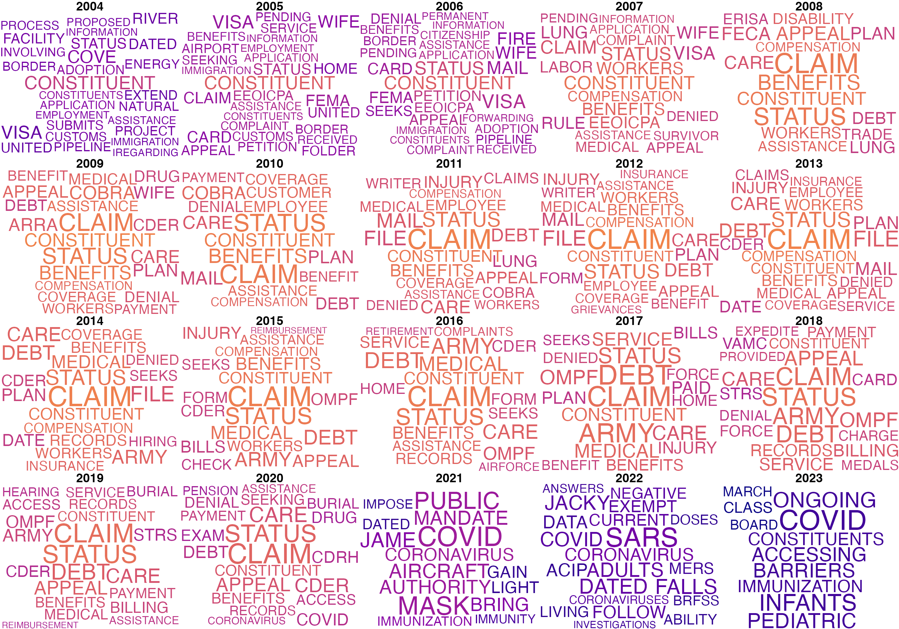
Individual Casework and Major Events
Table 4.2 shows a list of major casework-driving events between 2005 and 2024, as identified by the POPVOX Foundation’s Casework Navigator Initiative.10 Several of the events Meeker (2026) identifies leave clear traces in our data. FEMA appears in the years after Hurricane Katrina; ARRA and COBRA appear in 2009 and 2010, as laid-off workers sought help keeping health coverage through the stimulus’s COBRA subsidy; and COVID appears from 2020 onward, as a vast array of issues related to the COVID-19 pandemic affected people’s lives. Other events do not appear, which itself reflects the scope of our data. Casework after the Haiti earthquake and the Afghanistan withdrawal would have been likely to go to the State Department, the one department whose records we still have not received.
| Year(s) | Event | Casework Impact |
|---|---|---|
| 2005 | Hurricane Katrina | Years of disaster and displacement casework across the Gulf states |
| 2008 | Financial crisis | Foreclosure and unemployment cases at volumes most offices had never seen; long-tail casework related to rising demand for other safety net programs, including SSDI and VA Compensation and Pension |
| 2010 | Haiti earthquake | Immigration and repatriation casework, including recovery and return of the remains of deceased American citizens |
| 2017 | Hurricane Maria | Multi-year disaster and recovery casework |
| 2018–2019 | Partial government shutdown | Agency-disruption casework across the federal landscape including homeland security agencies, federal employees, etc. |
| 2020–2022 | COVID-19 pandemic | Sustained, multi-year surges across many agencies and programs simultaneously; pandemic-era relief casework still active in 2026 |
| 2021 and ongoing | Afghanistan withdrawal | Thousands of urgent immigration and evacuation cases; many Afghan families remain in the immigration process today |
| Recurring | Western drought and wildfire cycles | Seasonal and recurring disaster casework |
| Recurring | Local disasters: tornadoes, flooding, plant closures, industry collapses | Varied and complex local casework, often including disaster programs as well as wayfinding and connections to local relief, liaising with state counterparts on unemployment and emergency SNAP/WIC benefits, replacing destroyed or damaged documents, etc. |
Variation by Legislator in Individual Constituency Service
Figure 4.3 shows the variation in the provision of individual constituency service across members in both the Senate (left) and the House (right). The x-axis presents the legislative offices by percentile, organized from least active on the left to most active on the right. The y-axis shows the average number of agency requests per year. The color of the points indicates the party of the legislator, with Republicans in orange, independents in magenta, and Democrats in purple. The plot reveals extreme variation across legislators, with some legislators appearing to provide no constituency service to individuals, while others are making hundreds of requests on behalf of individuals per year.
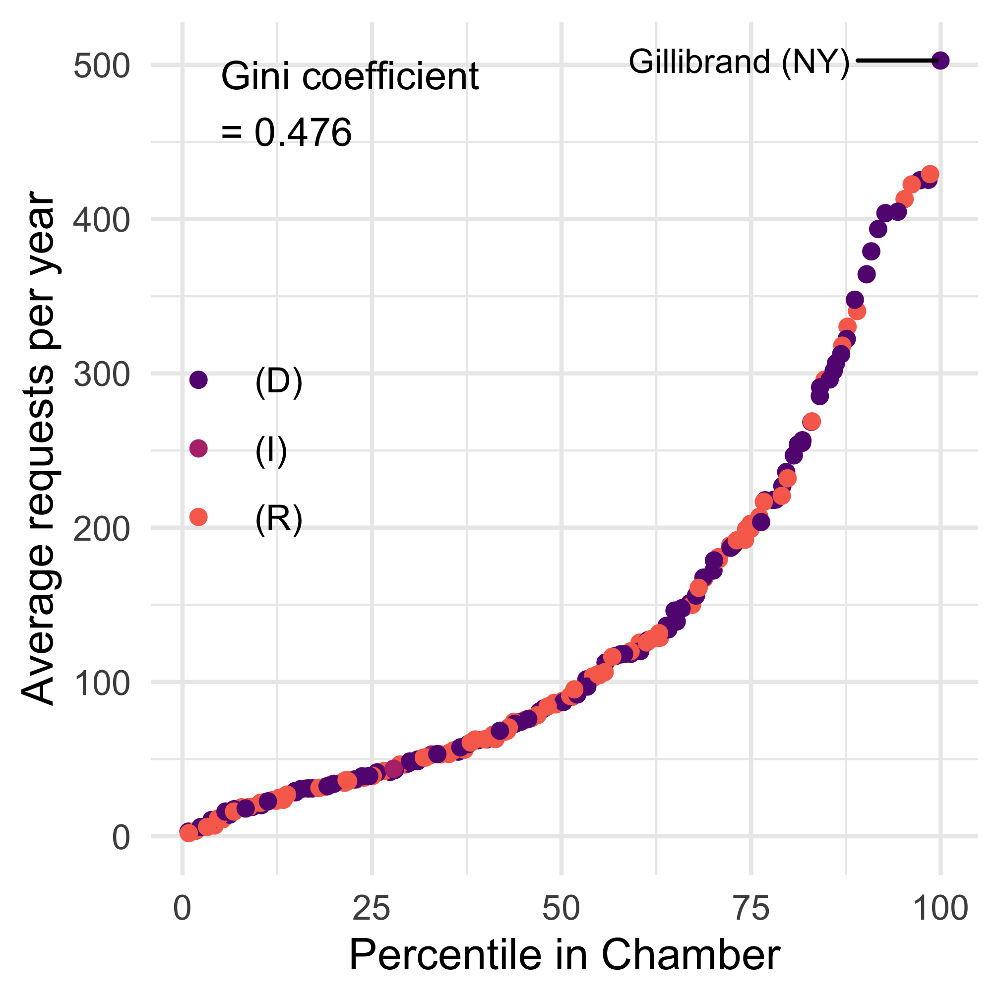
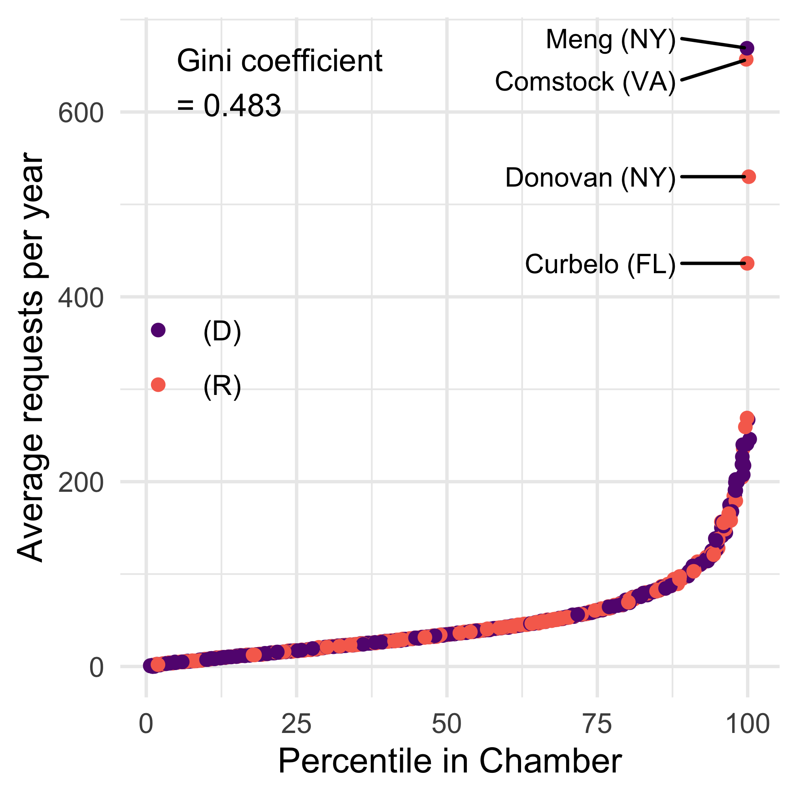
Strikingly, there are a few House offices averaging higher levels of interbranch representation than any Senate office. Notable high-performing outliers in the House include Representatives Meng (D-NY), Comstock (R-VA), Donovan (R-NY), and Curbelo (R-FL).11 Senator Gilibrand (D-NY) is the only notable high-performing outlier in the Senate.
4.4 What Does Corporate Service Look Like in the Data?
As we saw in Figure 4.1, corporate service is much less common than service on behalf of individuals; it comprises approximately 6% of all interbranch representation. Figure 4.4 below shows that corporate service has shifted over time. In the earliest years in our data, terms such as electric, transmission, hydroelectric, and license reflect requests to the Federal Energy Regulatory Commission (FERC) on behalf of energy projects.12 From 2007 to 2009, labor, certification, PERM, and visa reflect help with the Department of Labor’s foreign worker certification programs. From 2010 to 2017, capital, access, and contracting reflect requests to the Small Business Administration. More recently, the Food and Drug Administration product centers (CDER, CDRH, CBER) feature prominently, along with COVID, as companies sought help during the pandemic.
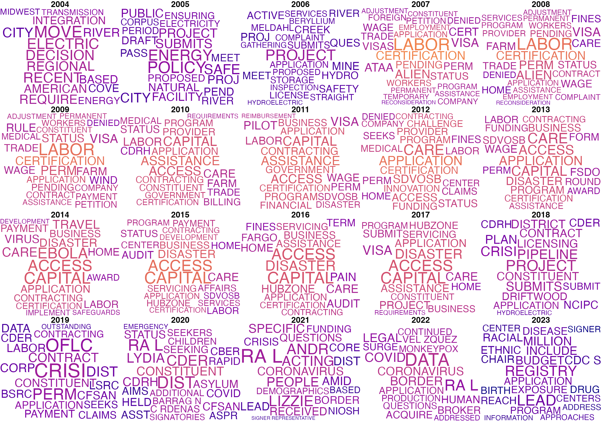
Variation by Legislator in Corporate Service
Figure 4.5 below shows how corporate service work differs across legislators. These patterns again reveal a wide variation in service on behalf of businesses, higher than the variation in overall interbranch representation. Interestingly, the top of both lists contains many of the same offices—those of Senators Nelson, Webb, Warren, Rubio, and Toomey were also in the top 10 offices in providing individual constituency service. Likewise, the offices of Representatives Comstock, Wolf, Van Hollen, Graham, and Faso were also in the top 10% of offices providing individual constituency service in the House.
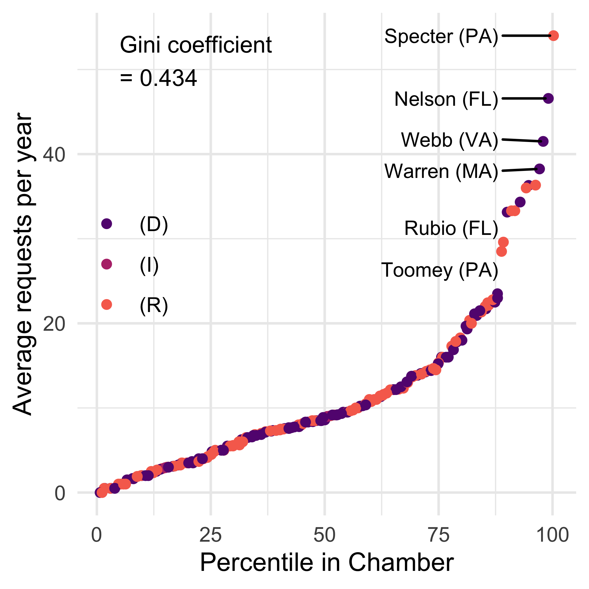
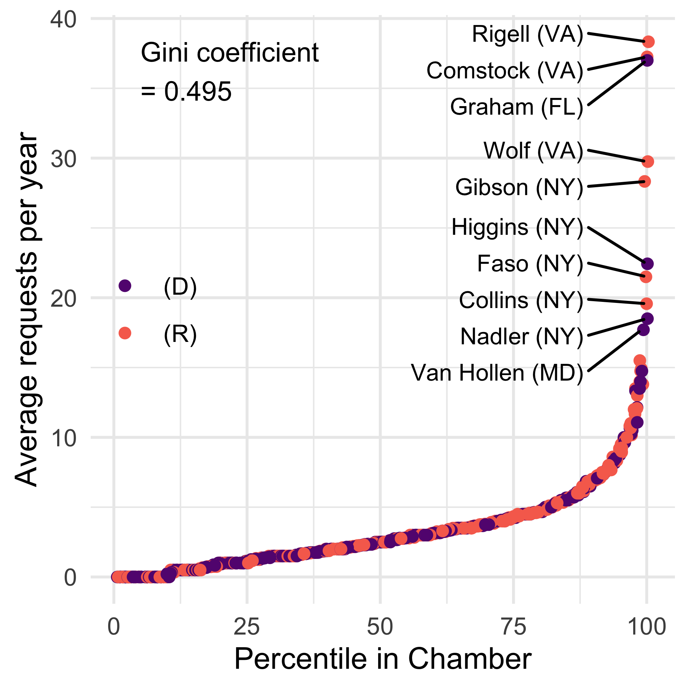
Many legislators wrote on behalf of businesses that needed assistance with work visas and other documentation for foreign workers. These communications appeared in a number of different agencies, including the U.S. Citizenship and Immigration Services (USCIS) and several sub-agencies in the Department of Labor like the Employment and Training Administration (ETA) and the Office of the Solicitor. Some of the legislators we find doing the most work helping businesses with work visas for their employees might defy stereotypes of corporate advocacy. For example, the list of legislators who wrote the most letters on behalf of business interests to USCIS in 2016 includes prominent progressive Democrats like Sen. Elizabeth Warren (D-MA, 249 letters) and Rep. Jerry Nadler (D-NY, 211 letters), as well as Rep. Brian Higgins (D-NY, 249 letters), Sen. Chuck Schumer (D-NY, 220 letters), Rep. Scott Rigell (R-VA, 215 letters), Sen. Kirsten Gillibrand (D-NY, 151 letters), Sen. Amy Klobuchar (D-MN, 146 letters), and Sen. Johnny Isakson (R-GA, 125 letters).13
By contrast, if we look at the legislators who wrote the most corporate service letters to a single agency in a given year, excluding USCIS, Republicans, the party more traditionally associated with business interests, are better represented: four of the top seven are Republicans. The list includes Sen. David Vitter (R-LA, 64 letters to the Small Business Administration in 2015), Sen. Mark Warner (D-VA, 56 letters to the Centers for Medicare and Medicaid Services, or CMS, in 2014), Sen. Richard Lugar (R-IN, 49 letters to CMS in 2009), Rep. Eric Cantor (R-VA, 33 letters to CMS in 2011), Sen. Marco Rubio (R-FL, 32 letters to CMS in 2016), Rep. Brad Sherman (D-CA, 31 letters to CMS in 2012), and Sen. Jim Webb (D-VA, 28 letters to the Department of Labor’s Employment and Training Administration in 2007).
4.5 What does Nonprofit and Local Government Service look like in the data?
As we saw in Figure 4.1, service on behalf of nonprofits and local governments is about as common as corporate service and comprises about 6% of coded records. Figure 4.6 shows that this service consists largely of support for grant applications: application, funding, supports, and program appear prominently in almost every year. The specific programs involved shift over time with federal funding priorities. In the mid-2000s, legislators frequently supported fire departments’ applications for FEMA’s firefighter grants (fire, firefighters, SAFER).14 After the 2009 stimulus bill, the American Recovery and Reinvestment Act of 2009 (ARRA), transportation grants dominated, particularly the Department of Transportation’s new competitive Transportation Investment Generating Economic Recovery (TIGER) program (TIGER, rail, road, bridge). Throughout the period, legislators also supported applications for the Department of Labor’s workforce training grants (WIRED, TAACCCT, YouthBuild),15 as well as grants to hospitals and rural health providers (hospital, care, rural).
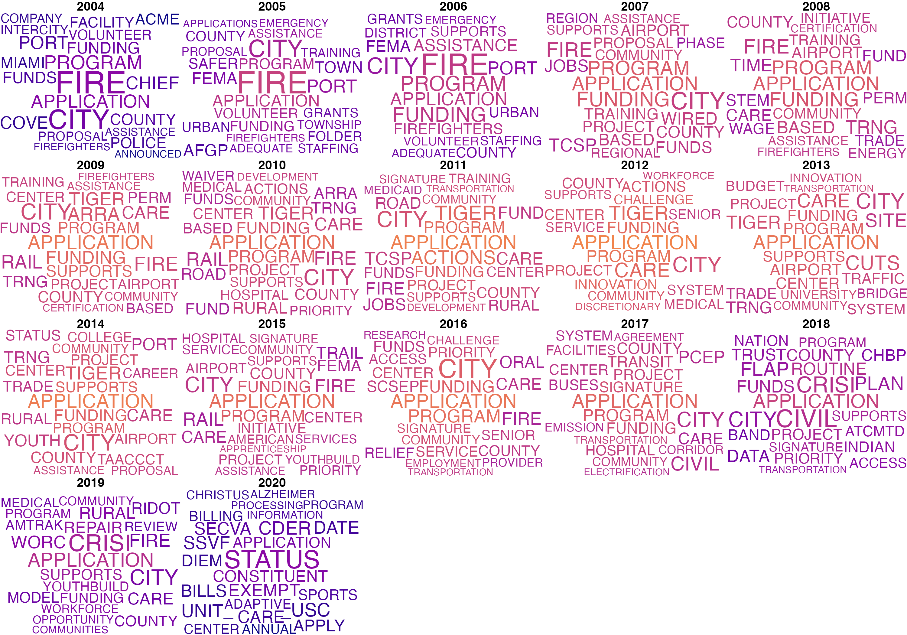
This grant support connects to the longstanding debate about earmarks. Although our data show that letters supporting grants for local nonprofits and governments predate the 2011 congressional ban on earmarks, legislators may also have used this activity as a substitute for earmarks, as Mills and Kalaf-Hughes (2015) describe. Support for competitive, discretionary programs like TIGER remains prominent in our data after the ban. However, Mills and Kalaf-Hughes (2015) also find that “letter-marking,” as they term this behavior, may be less effective than earmarking.
Variation by Legislator in Nonprofit and Government Service
Figure 4.7 shows substantial variation across legislators in the amount of constituency service on behalf of nonprofits and local governments that legislators perform each year. Several outliers, including Senators Schumer (D-NY), Gillibrand (D-NY), and Nelson (D-FL), drive a fair share of the variation in the Senate, with Schumer writing over a hundred letters on behalf of nonprofits and local governments per year. In the House, on the other hand, the offices doing the most are closer to the rest of the distribution. The yearly averages are much lower, with Representatives Rahall (D-WV), Baldwin (D-WI, before she moved to the Senate), and Owens (D-NY) leading with averages of 11–15 letters per year.
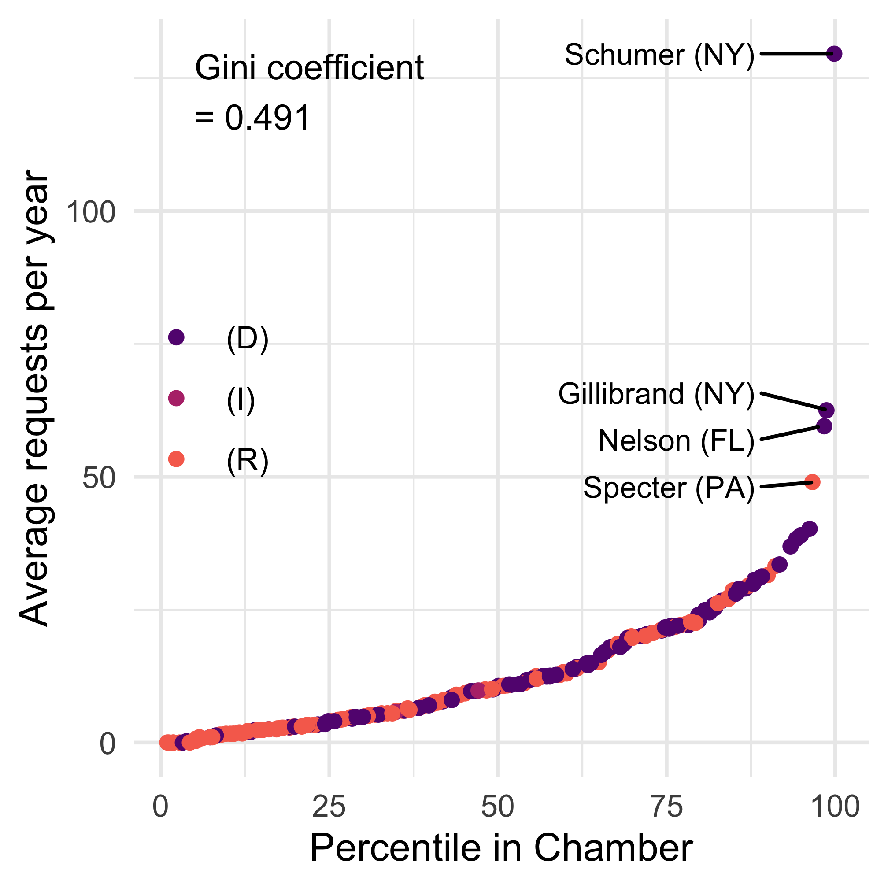
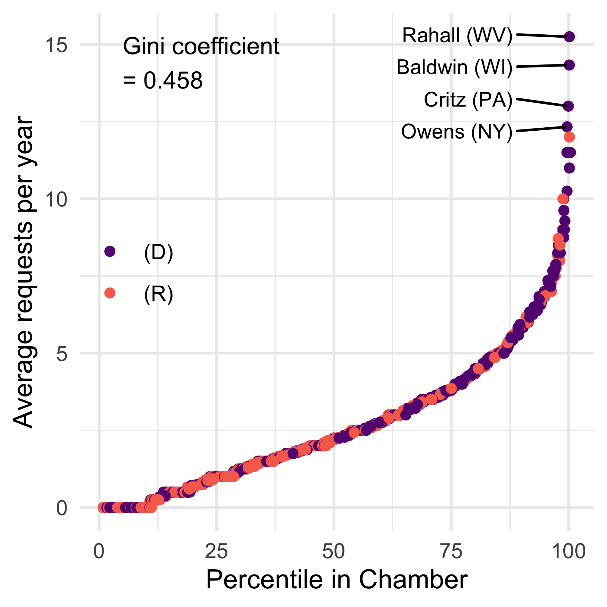
4.6 What does General Policy Work look like in the data?
We turn now from our casework categories to our policy work categories of interbranch representation. General policy work comprises approximately 10% of coded records. As Figure 4.8 shows, members of Congress communicate with federal agencies about general policy work on a wide range of matters. A stable set of terms—program, information, questions, report, priority, and urge—appears in nearly every year, reflecting requests for information and advocacy on agency priorities. Many of the specific policy issues seem to follow the “events of the day”: Enron and the Western energy crisis in 2004-2006; Katrina in 2005; mine safety after the Sago and Crandall Canyon disasters in 2006 and 2007; ARRA in 2009; the Affordable Care Act from 2010 to 2013; Ebola in 2014; Zika in 2016; the opiod crisis in 2018; PFAS in 2021; and COVID from 2020 onward. The vocabulary also shifts over time from hearings (hearing, testify, subcommittee) to rulemaking (rule, proposed, final), consistent with the predominance of rulemaking requests we document below.
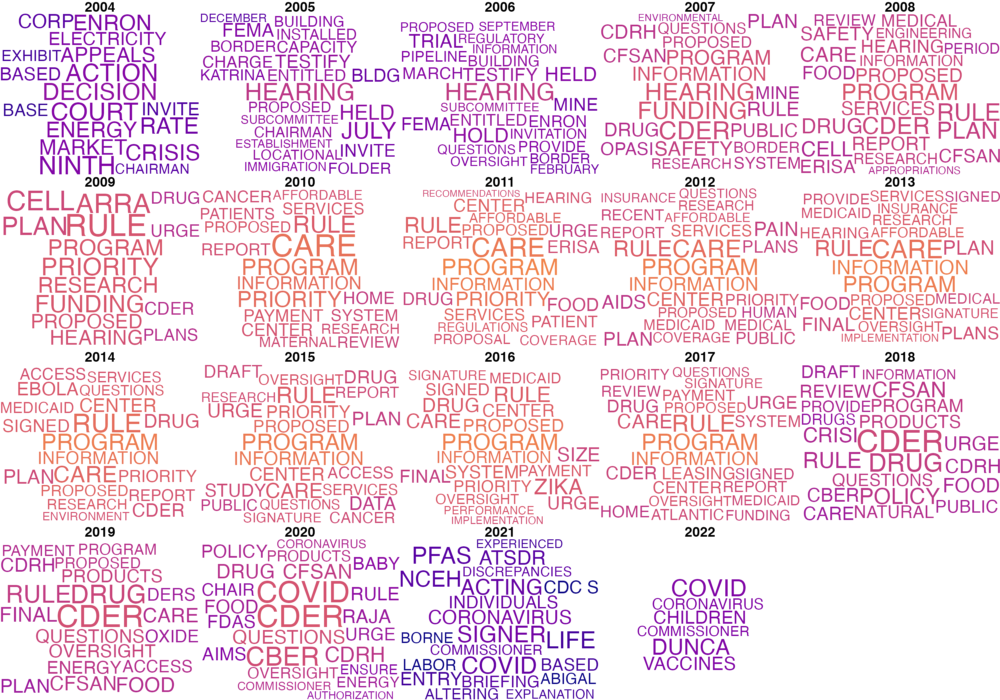
Figure 4.9 shows the most frequent words in general policy contacts within a single agency, the Department of Labor’s Mine Safety and Health Administration (MSHA). Alongside words describing the subjects of these contacts (mine, safety, explosion, coal, dust, exposure, silica, fibrosis, and disability), words like hearing, report, and inspections reflect traditional oversight activities. These terms illustrate that the health problems miners bring to their legislators in individual constituency service casework requests can inform the general policy work that legislators do with the agency, consistent with our discussion in Chapter 3.
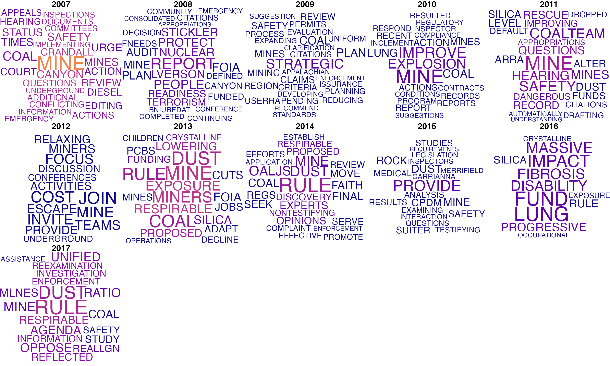
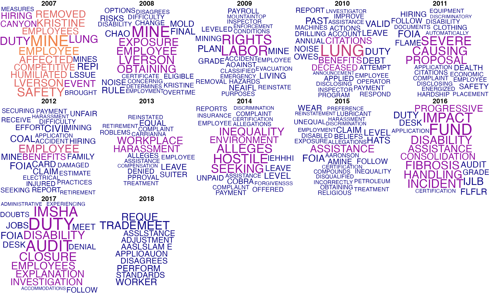
Although related to and informed by traditional oversight, most of these requests concern agency rulemaking and other executive-branch policymaking. Oversight work often leads not to legislation or hearings, but to changes in agency rules, guidance, or enforcement practices.
Variation Across Legislators in Policy Work
Like other forms of interbranch representation, general policy work exhibits substantial variation across legislators, though slightly less variation than constituency service on behalf of individuals, businesses, nonprofits, or local governments. Figure 4.10 shows that many of the offices that provided the most constituency service also did the most general policy work, including Senator Grassley and Representatives Pallone and Rahall. Other top offices for general policy work were not leading providers of constituency service, including Senators Harkin and Hatch (though Harkin was near the top for work on behalf of nonprofits and local governments).
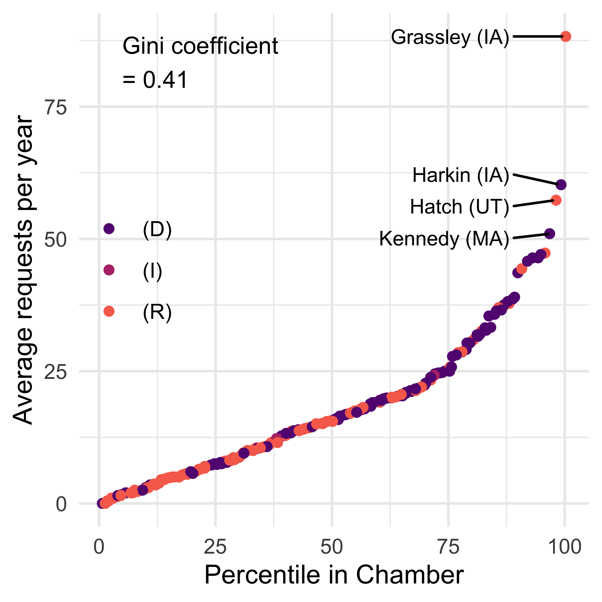
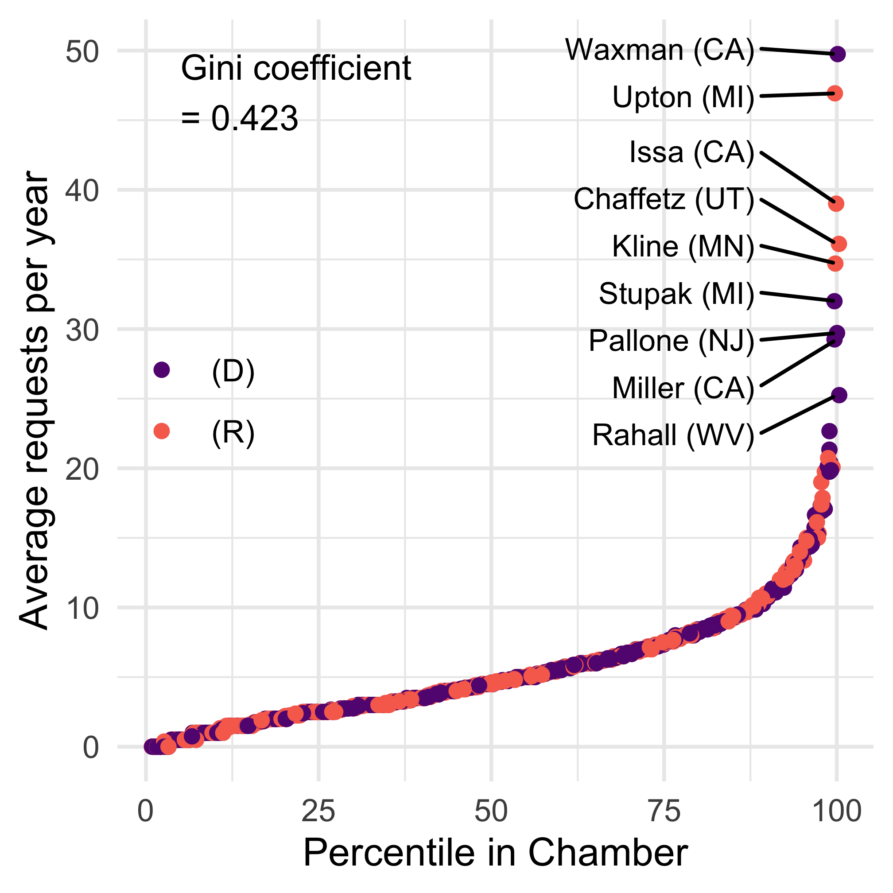
Sub-Types of General Policy Work
Classifying general policy work into the three sub-types we introduced in Chapter 3, we find that most requests fall into the third sub-type, post-legislation agency policymaking, and most of those are comments on proposed agency rules (Figure 4.11). The next most frequent type of request is for assistance in drafting legislation. Because it occurs before legislation is enacted, this is clearly not oversight. The third most common type of request relates to more traditional oversight actions like hearings and reports. A much smaller category of oversight requests also emerges: requests that, unlike hearings and rulemaking comments, are largely unrelated to legislative tasks. For example, members of Congress frequently contact agencies about personnel decisions, upcoming lawsuits, and their response to disasters. When the nature of the congressional request relates to agency leadership, personnel policy (rather than a particular federal worker), how the agency should settle or make policy changes in response to a lawsuit, or how it should distribute disaster aid (in general, not to a particular group of constituents), we consider such requests to involve agency policy.
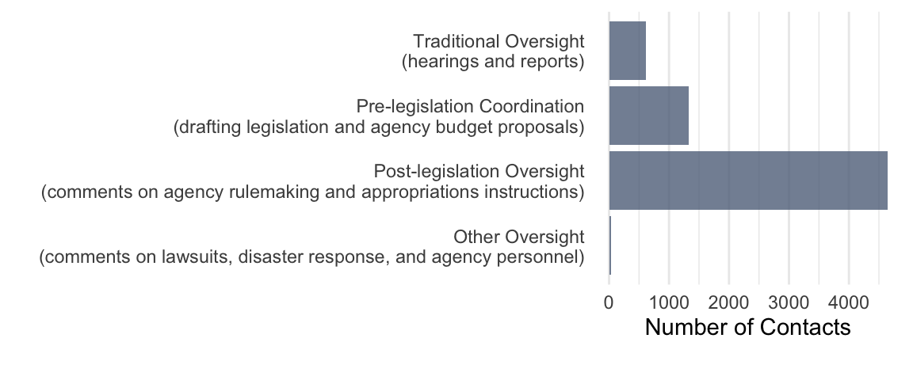
The nature of interbranch representation varies by agency. This is true within sub-types of general policy work as well, as an examination of these sub-types with a selection of agencies in Figure 4.12 shows. While congressional attention focuses on rulemaking overall, contacts with Homeland Security focus on traditional oversight, and contacts with USDA are mostly about farm bills and related legislation. Other agencies, like the EPA and the Bureau of Ocean Energy Management (BOEM), fall somewhere in between: they receive mostly rulemaking requests but also hear from legislators about legislation and hearings.
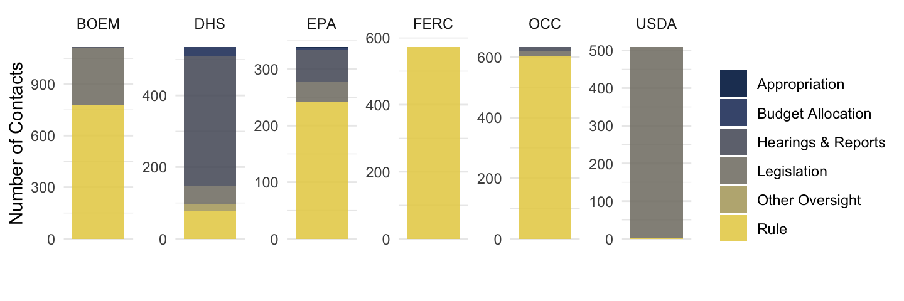
4.7 What does Corporate Policy work look like in the data?
Finally, we turn to the least common form of interbranch representation: corporate policy work. While 12% of coded interbranch representation is policy work, just 16% of that is corporate policy. Combining those percentages, we see that less than 2% of all interbranch representation is about corporate policy. Although it is the smallest category, this category is central to understanding how much legislators advocate on behalf of corporate policy interests.
Figure 4.13 shows that corporate policy work centers on agency rulemaking: rule, proposed, and final appear in most years. The industries involved in this work change as the policy agenda shifts. In both the years leading up to and following the passage of the Affordable Care Act in 2010, legislators frequently weighed in on healthcare-related issues (physician, payment, schedule, reimbursement). From 2013 to 2016, trade negotiations dominated, especially the Trans-Pacific Partnership (Japan, Vietnam, apparel, yarn, and currency) and the Transatlantic Trade and Investment Partnership (TTIP). More recently, food labeling and standards issues before the FDA’s food center (CFSAN, cranberry, maple, olive) became prominent. Some industries recur throughout: dairy appears in more years than any other industry, and tobacco and cigars appear repeatedly as the FDA implemented its new authority over tobacco products under the 2009 Tobacco Control Act (Family Smoking Prevention and Tobacco Control Act 2009), including its 2016 extension of that authority to cigars (Food and Drug Administration 2016).
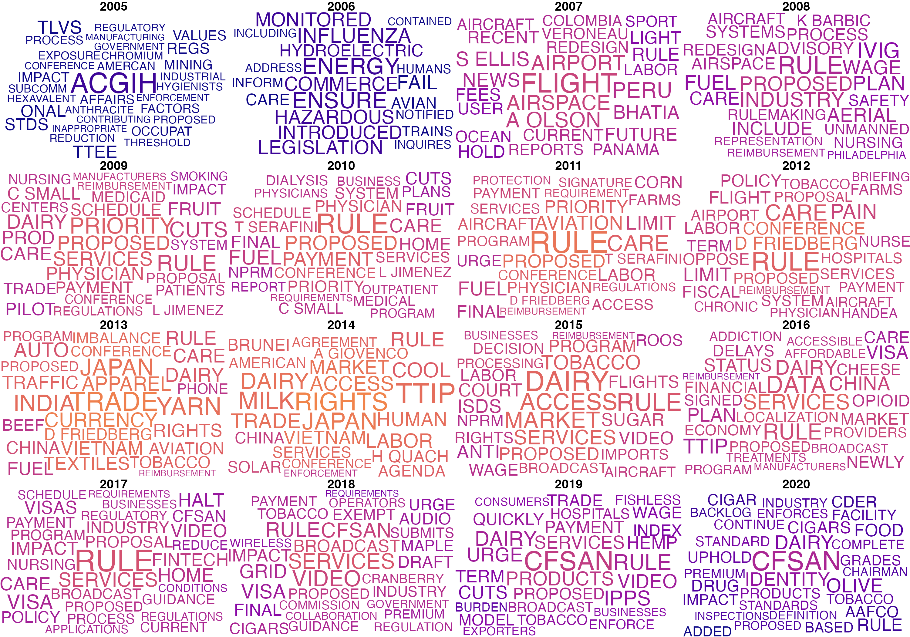
Variation in Corporate Policy Work
Figure 4.14 shows the variation in corporate policy work across legislators, with the Senate on the left and the House on the right. These patterns again reveal high levels of variation in how much corporate policy work legislators do. Variation in corporate policy work across House offices is greater than for any other type of interbranch representation. Several of these offices were also top providers of constituency service, including Senators Lugar, Warner, and Reid. Others topped the list for corporate policy work but not constituency service, including Senators Mikulski and Baucus.
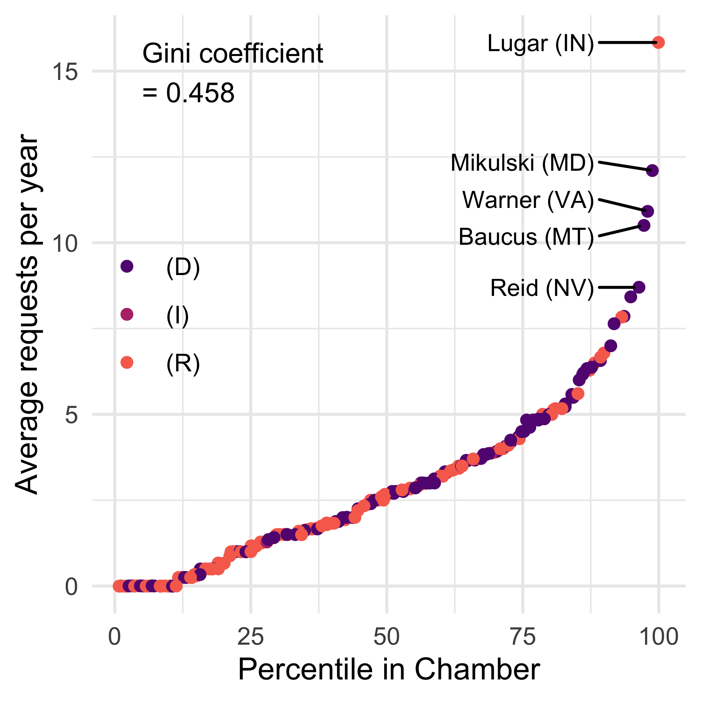
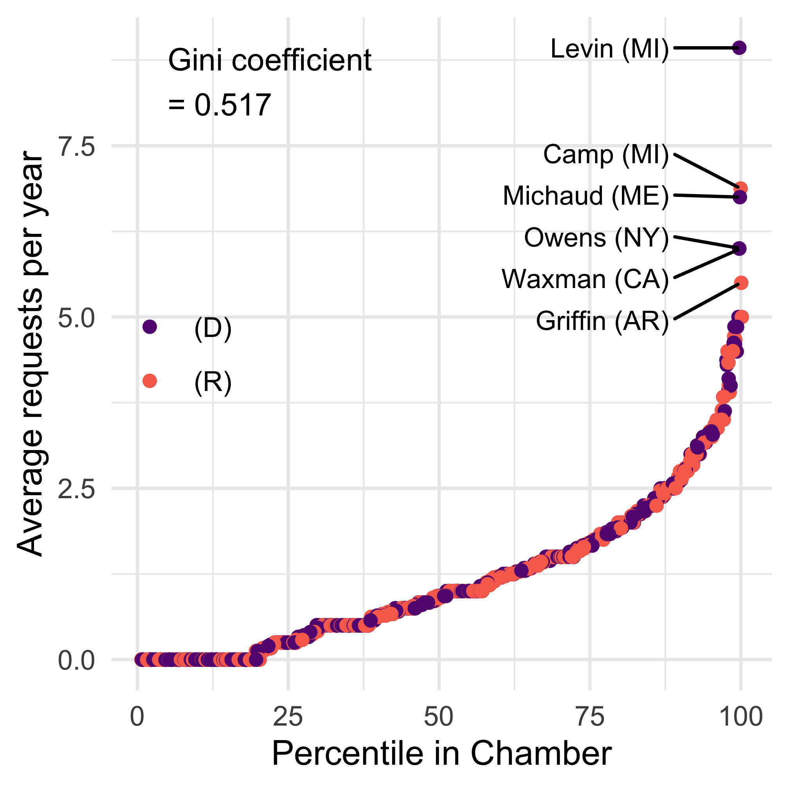
In addition to showing the variation in corporate policy work, Figure 4.14 sheds light on how much less common corporate policy work is. Legislators average between 0 and 40 corporate policy contacts a year, with Senators averaging around 5 corporate policy contacts a year, and the average House member around 2 per year.
4.8 Correlation Across Types of Interbranch Representation
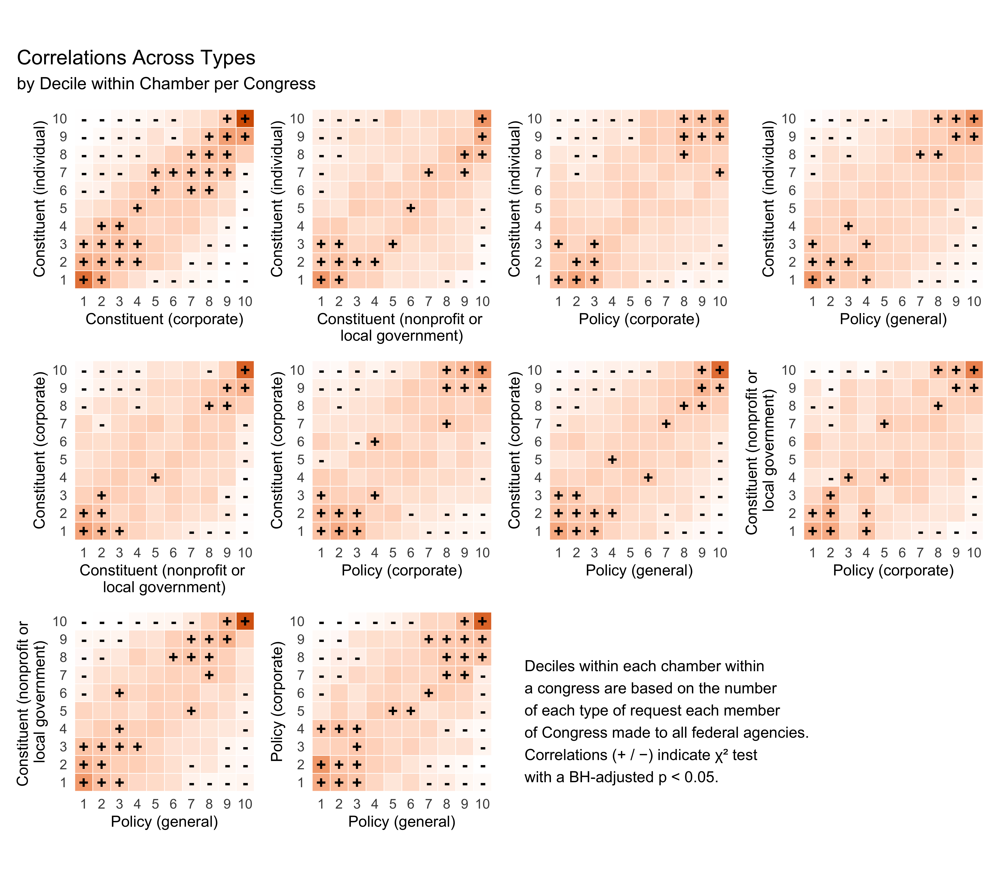
Finally, we examine correlations between each of our five types of interbranch representation. As we saw above, some legislators whose offices do a lot of one type of interbranch representation, like individual constituency service, also do more of other types, like policy work. Looking at these relationships in a more systematic way can provide additional clues about what drives interbranch representation and about the nature of interbranch representation itself. Strong correlations between types would indicate that interbranch representation is in fact a form of congressional activity that can be thought of in terms of “more” or “less,” as we discuss in Chapter 2.
Figure 4.15 shows that all types of interbranch representation are indeed correlated with one another. High performers of one type tend to be high performers of other types. Specifically, each panel of the plot shows the correlations between deciles of two types of interbranch representation (individual constituency service and corporate constituency service, individual constituency service and corporate policy, etc.). In all ten panels—that is, for each possible pair of interbranch representation types—the top and bottom of each decile are correlated, and Chi-square tests show that these correlations are significant at the 0.05 level. The correlations are strongest for multiple types of constituency service and policy work: individual constituency service is strongly correlated with corporate service; corporate service is strongly correlated with nonprofit or local government service; and general policy work is strongly correlated with corporate policy work. However, there are a number of strong correlations between constituency service and policy work, most notably for nonprofit or local government service and general policy work, as well as corporate service and general policy work.
4.9 Conclusion
Across every type of interbranch representation, we find wide variation in how much work legislators do, and the offices that lead in one type are not always those that lead in another. Some offices appear to invest heavily across the board in interbranch representation, consistent with differences in capacity, or with casework generating policy work, as Chapter 3 described. Others appear to specialize in the kinds of work their constituents most demand or that best serve their political goals. These descriptive patterns cannot by themselves tell us why legislators allocate their effort as they do. In the chapters that follow, we use within-legislator and within-district variation to test how demand (Chapter 5), capacity (Chapter 6), and strategic incentives (Chapter 7) shape interbranch representation.
Many records related to national security are exempt from FOIA, and we found that the Department of Defense had particularly dysfunctional FOIA infrastructure. Additionally, the Department of State is the only agency that has yet to deliver records. Thus, our records on national security and foreign affairs are less complete than our records on domestic affairs.↩︎
The remainder are committee staff, state legislators, judges, agency officials, lobbyists, White House officials, former or future members of Congress, and others who were, for various reasons, swept into an agency’s tracking systems or search for records. For example, House Ways and Means Committee Staff wrote over 500 letters per year to the U.S. Trade Representative. Richard Blumenthal wrote at least 42 letters to the Department of Housing and Urban Development in his role as Attorney General of Connecticut prior to serving in Congress. In some cases, agencies appeared to use their congressional correspondence tracking system as a general tracking system for VIPs. The Department of Education included Politico correspondents Jennifer Haberkorn and Kenneth P. Vogel. The Federal Highway Administration tagged 27 letters from a particularly well-connected consultant. A smaller number are members of Congress whose names were ambiguous, illegible, or inappropriately redacted.↩︎
For example, between May 2015 and December 2017, the Department of Justice Office of Administrative Law Judges received 132 emails, 109 telephone calls, and 54 letters. Between 2007 and 2017, the Postal Regulatory Commission received 100 emails, 30 faxes, 173 letters, and 118 calls.↩︎
Sometimes correspondence logs included information on the response from the agency or how the request was resolved, but our focus in this book is understanding the behavior of congressional offices. Several recent studies examine agency behavior (e.g., Mills and Kalaf-Hughes 2015; Lowande 2019), which we plan to build on in future work.↩︎
Some agencies publish previously and/or frequently requested records in online reading rooms on their FOIA websites. In such cases, we were able to obtain some data without making a new request. However, these instances were relatively rare. The only agency we have found to publish records of congressional correspondence proactively is the Federal Energy Regulatory Commission. Some FOIA offices did everything they could to refuse our requests. Other FOIA offices said they were “waiting for someone to do this so [they] don’t have to keep dealing with piecemeal requests, which [they] get all of the time.”↩︎
Several of these requests turned out to be redundant, as some USDA components held congressional correspondence logs for multiple sub-agencies. This was a common pattern where Recordkeeping was fairly opaque, even to FOIA officers, who referred us back and forth among components.↩︎
USCIS also informed us that they do not keep records of congressional correspondence for more than five years because of the very large number of communications that they receive from members of Congress.↩︎
Full details about our coding process and codebook can be found in Appendix A.↩︎
Due to incomplete record keeping and compliance with our FOIA requests, these are certainly undercounts. One vendor of correspondence management systems (Stowe 2026) estimated that congressional offices logged 128,000 cases in 2022 alone—though we do not know what portion of these required dealing with the federal bureaucracy.↩︎
Casework Navigator was an initiative by the POPVOX Foundation designed to support congressional caseworkers and improve constituent service across legislative offices. In 2026, the initiative spun off into a stand-alone nonpartisan, nonprofit organization called the Constituent Service Institute (POPVOX Foundation 2026).↩︎
Dropping these four outliers does not affect any of our statistical results.↩︎
See Powell et al. (2023) for an analysis of the extent to which legislators’ letters to FERC are related to constituents’ concerns or campaign contributions from political action committees linked to corporations in the energy sector. We find differences in letter-writing to FERC by party and campaign contributions. Republicans and legislators who receive money from the energy sector write more letters to FERC on behalf of energy companies, but not on behalf of constituents. In contrast, Democrats write more often in opposition to energy companies.↩︎
A word of caution about drawing inferences from this 2016 case. We chose 2016 to use for this example because it was one of the few years for which we have data from USCIS. We urge readers to remember that these 2016 letters were written prior to President Trump’s inauguration (January 2017), and thus were not in response to Trump-initiated immigration policy changes.↩︎
See Grimmer et al. (2014) for a discussion of legislator credit claiming on fire department grants.↩︎
WIRED is the Workforce Innovation in Regional Economic Development initiative; TAACCCT is the Trade Adjustment Assistance Community College and Career Training program.↩︎